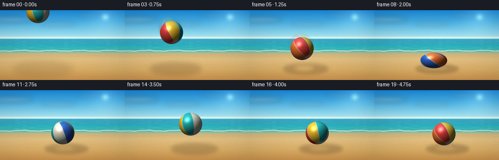
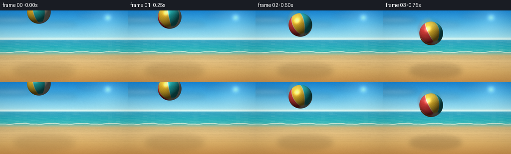

CODING AGENTS AS PIXEL WORLD MODELS
traex/DeepSeek-V4.1-Flash · phygen_030
点击播放 · 原生 RGB 像素
逐轮保存的候选
回放视频、检查图与代码变化。
每份候选均可单独播放。实际图片检查记录在下方工具轨迹中。
候选 01播放与检查图
点击播放 · 原生 RGB 像素

展开代码变化
--- 上一保存版本
+++ 本次保存版本
@@ -0,0 +1,475 @@
+from __future__ import annotations
+
+import math
+from pathlib import Path
+
+import numpy as np
+from PIL import Image, ImageDraw, ImageFilter
+
+import artifact_io
+
+
+WIDTH = 256
+HEIGHT = 144
+FRAMES = 20
+FPS = 4.0
+SS = 4
+CONTACT_Y = 120.0
+BALL_RADIUS = 24.0
+
+
+def _gradient(height: int, stops: list[tuple[float, tuple[int, int, int]]]) -> np.ndarray:
+ ys = np.arange(height, dtype=np.float32) / SS
+ positions = np.array([p for p, _ in stops], dtype=np.float32)
+ colors = np.array([c for _, c in stops], dtype=np.float32)
+ out = np.empty((height, 3), dtype=np.float32)
+ for channel in range(3):
+ out[:, channel] = np.interp(ys, positions, colors[:, channel])
+ return out
+
+
+def make_background() -> Image.Image:
+ width, height = WIDTH * SS, HEIGHT * SS
+ rng = np.random.default_rng(41)
+
+ column = _gradient(
+ height,
+ [
+ (0.0, (25, 137, 218)),
+ (24.0, (73, 177, 229)),
+ (52.0, (158, 224, 240)),
+ (58.0, (221, 242, 235)),
+ (59.0, (55, 161, 193)),
+ (72.0, (33, 171, 188)),
+ (82.0, (52, 184, 183)),
+ (84.0, (99, 181, 171)),
+ (87.0, (154, 190, 158)),
+ (91.0, (211, 184, 126)),
+ (101.0, (230, 195, 132)),
+ (122.0, (222, 177, 104)),
+ (144.0, (204, 148, 78)),
+ ],
+ )
+ image = np.broadcast_to(column[:, None, :], (height, width, 3)).copy()
+
+ yy, xx = np.mgrid[0:height, 0:width].astype(np.float32)
+ xf = xx / SS
+ yf = yy / SS
+
+ # Warm sun bloom just above the right side of the horizon.
+ sun_distance = np.sqrt((xf - 216.0) ** 2 + ((yf - 14.0) * 1.1) ** 2)
+ bloom = np.exp(-(sun_distance / 34.0) ** 2) * 30.0
+ core = np.exp(-(sun_distance / 7.0) ** 2) * 66.0
+ image += (bloom + core)[..., None] * np.array([1.0, 0.84, 0.62], dtype=np.float32)
+
+ # A faint high-cloud layer gives the sky depth without competing with the ball.
+ cloud_layer = Image.new("RGBA", (width, height), (0, 0, 0, 0))
+ cloud_draw = ImageDraw.Draw(cloud_layer)
+ clouds = [
+ (22, 19, 93, 10, 72),
+ (119, 28, 73, 7, 48),
+ (181, 11, 54, 6, 37),
+ ]
+ for x, y, w, h, alpha in clouds:
+ cloud_draw.ellipse(
+ ((x - w / 2) * SS, (y - h / 2) * SS, (x + w / 2) * SS, (y + h / 2) * SS),
+ fill=(255, 252, 242, alpha),
+ )
+ cloud_layer = cloud_layer.filter(ImageFilter.GaussianBlur(5 * SS))
+ image = np.asarray(Image.alpha_composite(Image.fromarray(image.clip(0, 255).astype(np.uint8)).convert("RGBA"), cloud_layer))[..., :3].astype(np.float32)
+
+ # Fine ocean bands and broken glints.
+ ocean_layer = Image.new("RGBA", (width, height), (0, 0, 0, 0))
+ ocean_draw = ImageDraw.Draw(ocean_layer)
+ for index in range(25):
+ y = 60.0 + index * 0.86
+ phase = rng.uniform(0.0, math.tau)
+ points = []
+ for x in np.linspace(0.0, WIDTH, 34):
+ wave_y = y + 0.42 * math.sin(x * 0.13 + phase) + 0.18 * math.sin(x * 0.31 - phase)
+ points.append((x * SS, wave_y * SS))
+ alpha = int(28 + 18 * (index / 24.0))
+ color = (210, 247, 239, alpha) if index % 3 else (237, 252, 244, alpha + 18)
+ ocean_draw.line(points, fill=color, width=max(1, SS // 2))
+ image = np.asarray(Image.alpha_composite(Image.fromarray(image.clip(0, 255).astype(np.uint8)).convert("RGBA"), ocean_layer))[..., :3].astype(np.float32)
+
+ # Shore foam, wet sand, and receding ripples.
+ shore_layer = Image.new("RGBA", (width, height), (0, 0, 0, 0))
+ shore_draw = ImageDraw.Draw(shore_layer)
+ foam_points = []
+ for x in np.linspace(0.0, WIDTH, 65):
+ y = 83.3 + 0.8 * math.sin(x * 0.105) + 0.32 * math.sin(x * 0.31 + 1.4)
+ foam_points.append((x * SS, y * SS))
+ shore_draw.line(foam_points, fill=(250, 247, 222, 185), width=2 * SS)
+ shore_draw.line(
+ [(x, y + 1.2 * SS) for x, y in foam_points],
+ fill=(178, 225, 210, 82),
+ width=SS,
+ )
+ for index in range(9):
+ y = 94.0 + 2.1 * index + 0.13 * index * index
+ points = []
+ for x in np.linspace(0.0, WIDTH, 43):
+ offset = 0.38 * math.sin(x * (0.055 + index * 0.006) + index * 1.7)
+ points.append((x * SS, (y + offset) * SS))
+ shore_draw.line(points, fill=(105, 77, 42, 30), width=max(1, SS // 2))
+ shore_draw.line(
+ [(x, y + 0.7 * SS) for x, y in points],
+ fill=(255, 224, 164, 22),
+ width=max(1, SS // 2),
+ )
+ image = np.asarray(Image.alpha_composite(Image.fromarray(image.clip(0, 255).astype(np.uint8)).convert("RGBA"), shore_layer))[..., :3].astype(np.float32)
+
+ # Sand grain is correlated rather than per-pixel snow.
+ coarse = rng.normal(0.0, 2.5, (HEIGHT, WIDTH)).astype(np.float32)
+ grain = np.asarray(
+ Image.fromarray(np.clip(coarse + 128.0, 0, 255).astype(np.uint8)).resize((width, height), Image.Resampling.BICUBIC),
+ dtype=np.float32,
+ )[..., None]
+ image += (grain - 128.0) * 0.19
+ fine = rng.normal(0.0, 1.4, (height, width, 1)).astype(np.float32)
+ image += fine
+
+ # Slight haze at the horizon.
+ haze = np.exp(-((yf - 58.0) / 2.2) ** 2)[..., None] * np.array([20.0, 20.0, 16.0])
+ image += haze
+
+ return Image.fromarray(np.clip(image, 0, 255).astype(np.uint8), "RGB").convert("RGBA")
+
+
+def _rotation_matrix(axis: np.ndarray, angle: float) -> np.ndarray:
+ axis = axis / np.linalg.norm(axis)
+ x, y, z = axis
+ c, s = math.cos(angle), math.sin(angle)
+ one_c = 1.0 - c
+ return np.array(
+ [
+ [c + x * x * one_c, x * y * one_c - z * s, x * z * one_c + y * s],
+ [y * x * one_c + z * s, c + y * y * one_c, y * z * one_c - x * s],
+ [z * x * one_c - y * s, z * y * one_c + x * s, c + z * z * one_c],
+ ],
+ dtype=np.float32,
+ )
+
+
+PANEL_COLORS = np.array(
+ [
+ (239, 67, 62),
+ (255, 202, 46),
+ (32, 190, 190),
+ (246, 239, 216),
+ (49, 104, 211),
+ (255, 119, 48),
+ ],
+ dtype=np.float32,
+)
+
+
+def render_ball(cx: float, cy: float, sx: float, sy: float, spin: float) -> Image.Image:
+ width, height = WIDTH * SS, HEIGHT * SS
+ radius = BALL_RADIUS * max(sx, sy) + 5.0
+ x0 = max(0, int(math.floor((cx - radius) * SS)))
+ x1 = min(width, int(math.ceil((cx + radius) * SS)))
+ y0 = max(0, int(math.floor((cy - radius) * SS)))
+ y1 = min(height, int(math.ceil((cy + radius) * SS)))
+ if x0 >= x1 or y0 >= y1:
+ return Image.new("RGBA", (width, height), (0, 0, 0, 0))
+
+ yy, xx = np.mgrid[y0:y1, x0:x1].astype(np.float32)
+ dx = (xx + 0.5 - cx * SS) / (BALL_RADIUS * sx * SS)
+ dy = (yy + 0.5 - cy * SS) / (BALL_RADIUS * sy * SS)
+ rho2 = dx * dx + dy * dy
+ inside = rho2 <= 1.0
+ z = np.sqrt(np.clip(1.0 - rho2, 0.0, 1.0))
+
+ normal = np.stack((dx, dy, z), axis=-1)
+ rotation = _rotation_matrix(np.array([0.24, 1.0, 0.10]), spin)
+ rotation = _rotation_matrix(np.array([0.0, 0.0, 1.0]), -0.17) @ rotation
+ rotation = _rotation_matrix(np.array([1.0, 0.0, 0.0]), 0.10) @ rotation
+ object_normal = normal @ rotation
+
+ theta = np.arctan2(object_normal[..., 0], object_normal[..., 2])
+ panel_u = (theta + math.pi) / (2.0 * math.pi) * len(PANEL_COLORS)
+ panel_index = np.floor(panel_u).astype(np.int32) % len(PANEL_COLORS)
+ color = PANEL_COLORS[panel_index]
+
+ # Thin cream seams and the characteristic pale pole caps.
+ seam_distance = np.abs(panel_u - np.rint(panel_u))
+ seam = np.clip((0.055 - seam_distance) / 0.055, 0.0, 1.0)
+ color = color * (1.0 - 0.72 * seam[..., None]) + np.array([250, 246, 225], dtype=np.float32) * (0.72 * seam[..., None])
+ latitude = np.arcsin(np.clip(object_normal[..., 1], -1.0, 1.0))
+ cap = np.clip((np.abs(latitude) - 1.14) / 0.20, 0.0, 1.0)
+ color = color * (1.0 - 0.82 * cap[..., None]) + np.array([249, 244, 224], dtype=np.float32) * (0.82 * cap[..., None])
+
+ light = np.array([-0.52, -0.66, 0.58], dtype=np.float32)
+ light /= np.linalg.norm(light)
+ diffuse = np.clip(normal @ light, 0.0, 1.0)
+ wrapped = 0.28 + 0.72 * diffuse
+ edge = 0.74 + 0.26 * np.sqrt(np.clip(z, 0.0, 1.0))
+ rubber = 0.985 + 0.015 * np.sin(42.0 * object_normal[..., 0] + 31.0 * object_normal[..., 1] + 19.0 * object_normal[..., 2])
+ color = color * (wrapped * edge * rubber)[..., None]
+
+ half_vector = light + np.array([0.0, 0.0, 1.0], dtype=np.float32)
+ half_vector /= np.linalg.norm(half_vector)
+ specular = np.clip(normal @ half_vector, 0.0, 1.0) ** 38
+ specular *= 0.52 * np.clip(z * 1.4, 0.0, 1.0)
+ color += specular[..., None] * np.array([255.0, 248.0, 226.0], dtype=np.float32)
+
+ # A restrained sky-colored bounce light keeps the lower edge from turning muddy.
+ bounce = np.clip((-normal[..., 1] - 0.15) * 0.36, 0.0, 0.2)
+ color += bounce[..., None] * np.array([80.0, 157.0, 176.0], dtype=np.float32)
+ color = np.clip(color, 0.0, 255.0)
+
+ alpha = np.clip((1.0 - np.sqrt(rho2)) * (BALL_RADIUS * min(sx, sy) * SS / 2.0), 0.0, 1.0)
+ alpha *= inside.astype(np.float32)
+ rgba = np.zeros((y1 - y0, x1 - x0, 4), dtype=np.uint8)
+ rgba[..., :3] = color.astype(np.uint8)
+ rgba[..., 3] = np.rint(alpha * 255.0).astype(np.uint8)
+ layer = Image.new("RGBA", (width, height), (0, 0, 0, 0))
+ layer.paste(Image.fromarray(rgba, "RGBA"), (x0, y0))
+ return layer
+
+
+def make_shadow(cx: float, cy: float, sx: float, sy: float) -> Image.Image:
+ width, height = WIDTH * SS, HEIGHT * SS
+ bottom = cy + BALL_RADIUS * sy
+ clearance = max(0.0, CONTACT_Y - bottom)
+ shadow_width = BALL_RADIUS * (1.55 + 0.24 * sx) + clearance * 0.19
+ shadow_height = BALL_RADIUS * 0.40 + clearance * 0.075
+ alpha = int(np.clip(76.0 - clearance * 0.42, 23.0, 76.0))
+ shadow_cx = cx + 7.0 + clearance * 0.035
+ shadow_cy = CONTACT_Y + 1.0
+
+ layer = Image.new("RGBA", (width, height), (0, 0, 0, 0))
+ draw = ImageDraw.Draw(layer)
+ draw.ellipse(
+ (
+ (shadow_cx - shadow_width) * SS,
+ (shadow_cy - shadow_height) * SS,
+ (shadow_cx + shadow_width) * SS,
+ (shadow_cy + shadow_height) * SS,
+ ),
+ fill=(74, 51, 28, alpha),
+ )
+ if clearance < 18.0:
+ contact_alpha = int(58.0 * (1.0 - clearance / 18.0))
+ draw.ellipse(
+ (
+ (cx + 4.0 - BALL_RADIUS * 0.82 * sx) * SS,
+ (CONTACT_Y - BALL_RADIUS * 0.20) * SS,
+ (cx + 4.0 + BALL_RADIUS * 0.82 * sx) * SS,
+ (CONTACT_Y + BALL_RADIUS * 0.22) * SS,
+ ),
+ fill=(67, 43, 22, contact_alpha),
+ )
+ return layer.filter(ImageFilter.GaussianBlur((3.2 + clearance * 0.035) * SS))
+
+
+PARTICLE_RNG = np.random.default_rng(813)
+PARTICLE_COUNT = 42
+PARTICLE_VX = PARTICLE_RNG.uniform(-55.0, 92.0, PARTICLE_COUNT)
+PARTICLE_VY = PARTICLE_RNG.uniform(-126.0, -34.0, PARTICLE_COUNT)
+PARTICLE_SIZE = PARTICLE_RNG.uniform(1.0, 2.7, PARTICLE_COUNT)
+PARTICLE_TINT = PARTICLE_RNG.uniform(0.0, 1.0, PARTICLE_COUNT)
+PARTICLE_DELAY = PARTICLE_RNG.uniform(0.0, 0.08, PARTICLE_COUNT)
+
+
+def add_impact_effects(
+ canvas: Image.Image,
+ frame_index: int,
+ event_frame: int,
+ impact_x: float,
+ strength: float,
+) -> Image.Image:
+ if frame_index < event_frame:
+ return canvas
+ age = (frame_index - event_frame) / FPS
+ if age > 1.05:
+ return canvas
+
+ width, height = WIDTH * SS, HEIGHT * SS
+ dust = Image.new("RGBA", (width, height), (0, 0, 0, 0))
+ draw = ImageDraw.Draw(dust)
+ fade = max(0.0, 1.0 - age / 1.05)
+
+ ring_radius = (9.0 + 31.0 * age) * strength
+ ring_alpha = int(105.0 * fade * fade)
+ draw.ellipse(
+ (
+ (impact_x - ring_radius) * SS,
+ (CONTACT_Y - ring_radius * 0.25) * SS,
+ (impact_x + ring_radius) * SS,
+ (CONTACT_Y + ring_radius * 0.25) * SS,
+ ),
+ outline=(248, 225, 171, ring_alpha),
+ width=max(1, int((1.8 - age) * SS)),
+ )
+
+ for index in range(PARTICLE_COUNT):
+ particle_age = age - PARTICLE_DELAY[index]
+ if particle_age < 0.0:
+ continue
+ px = impact_x + PARTICLE_VX[index] * strength * particle_age
+ py = CONTACT_Y - 1.0 + PARTICLE_VY[index] * strength * particle_age + 0.5 * 230.0 * particle_age * particle_age
+ if py > CONTACT_Y + 2.0:
+ continue
+ particle_alpha = int(np.clip(205.0 * (1.0 - age / 1.05), 0.0, 205.0))
+ size = PARTICLE_SIZE[index] * strength
+ tint = PARTICLE_TINT[index]
+ color = (
+ int(236 + 18 * tint),
+ int(198 + 34 * tint),
+ int(130 + 50 * tint),
+ particle_alpha,
+ )
+ draw.ellipse(
+ ((px - size) * SS, (py - size) * SS, (px + size) * SS, (py + size) * SS),
+ fill=color,
+ )
+
+ if age < 0.62:
+ puff_fade = max(0.0, 1.0 - age / 0.62)
+ for index in range(7):
+ offset_x = (-15.0 + index * 5.2) * strength
+ offset_y = 1.5 * math.sin(index * 2.1)
+ puff_w = (9.0 + age * 28.0) * strength
+ puff_h = (2.5 + age * 7.0) * strength
+ draw.ellipse(
+ (
+ (impact_x + offset_x - puff_w) * SS,
+ (CONTACT_Y + offset_y - puff_h) * SS,
+ (impact_x + offset_x + puff_w) * SS,
+ (CONTACT_Y + offset_y + puff_h) * SS,
+ ),
+ fill=(246, 221, 171, int(28.0 * puff_fade * strength)),
+ )
+ dust = dust.filter(ImageFilter.GaussianBlur(0.7 * SS))
+ return Image.alpha_composite(canvas, dust)
+
+
+def build_path() -> list[dict[str, float]]:
+ centers = [
+ (78, 3),
+ (84, 13),
+ (90, 29),
+ (96, 46),
+ (102, 63),
+ (108, 79),
+ (113, 91),
+ (119, 98.4),
+ (122, 103.7),
+ (124, 100.3),
+ (126, 96.5),
+ (129, 88),
+ (131, 76),
+ (133, 67),
+ (135, 70),
+ (137, 78),
+ (139, 88),
+ (141, 99.4),
+ (142, 97.0),
+ (143, 90),
+ ]
+ scale_x = [
+ 1.0,
+ 1.0,
+ 1.0,
+ 1.0,
+ 1.0,
+ 1.0,
+ 1.0,
+ 1.09,
+ 1.17,
+ 1.08,
+ 1.01,
+ 1.0,
+ 1.0,
+ 1.0,
+ 1.0,
+ 1.0,
+ 1.0,
+ 1.08,
+ 1.02,
+ 1.0,
+ ]
+ scale_y = [
+ 1.0,
+ 1.0,
+ 1.0,
+ 1.0,
+ 1.0,
+ 1.0,
+ 1.0,
+ 0.90,
+ 0.68,
+ 0.82,
+ 0.98,
+ 1.0,
+ 1.0,
+ 1.0,
+ 1.0,
+ 1.0,
+ 1.0,
+ 0.86,
+ 0.96,
+ 1.0,
+ ]
+ return [
+ {"x": float(x), "y": float(y), "sx": float(sx), "sy": float(sy)}
+ for (x, y), sx, sy in zip(centers, scale_x, scale_y)
+ ]
+
+
+def make_frames() -> np.ndarray:
+ background = make_background()
+ path = build_path()
+ frames: list[np.ndarray] = []
+
+ for frame_index, pose in enumerate(path):
+ canvas = background.copy()
+ cx, cy, sx, sy = pose["x"], pose["y"], pose["sx"], pose["sy"]
+
+ canvas = Image.alpha_composite(canvas, make_shadow(cx, cy, sx, sy))
+ canvas = add_impact_effects(canvas, frame_index, 7, 119.0, 1.0)
+ canvas = add_impact_effects(canvas, frame_index, 17, 141.0, 0.56)
+
+ # A soft motion ghost on the fastest descent frames reads as 4 fps motion blur.
+ if 1 <= frame_index <= 6:
+ previous = path[frame_index - 1]
+ ghost_x = cx - 0.48 * (cx - previous["x"])
+ ghost_y = cy - 0.48 * (cy - previous["y"])
+ ghost = render_ball(ghost_x, ghost_y, sx, sy, 0.43 * (frame_index - 1) + 0.55)
+ alpha = np.asarray(ghost.getchannel("A"), dtype=np.float32) * 0.15
+ ghost.putalpha(Image.fromarray(np.clip(alpha, 0, 255).astype(np.uint8)))
+ ghost = ghost.filter(ImageFilter.GaussianBlur(1.8 * SS))
+ canvas = Image.alpha_composite(canvas, ghost)
+
+ spin = 0.43 * frame_index + 0.55
+ ball = render_ball(cx, cy, sx, sy, spin)
+ canvas = Image.alpha_composite(canvas, ball)
+ frames.append(np.asarray(canvas.convert("RGB").resize((WIDTH, HEIGHT), Image.Resampling.LANCZOS), dtype=np.uint8))
+
+ frames_array = np.stack(frames)
+
+ # Subtle cinematic vignette and a trace of color grain at delivery resolution.
+ yy, xx = np.mgrid[0:HEIGHT, 0:WIDTH].astype(np.float32)
+ nx = (xx - (WIDTH - 1) / 2.0) / ((WIDTH - 1) / 2.0)
+ ny = (yy - (HEIGHT - 1) / 2.0) / ((HEIGHT - 1) / 2.0)
+ vignette = 1.0 - 0.09 * np.clip(nx * nx * 0.72 + ny * ny * 0.50, 0.0, 1.0)
+ grain_rng = np.random.default_rng(1207)
+ for index in range(FRAMES):
+ noisy = frames_array[index].astype(np.float32) * vignette[..., None]
+ noisy += grain_rng.normal(0.0, 0.75, (HEIGHT, WIDTH, 1)).astype(np.float32)
+ frames_array[index] = np.clip(noisy, 0, 255).astype(np.uint8)
+ return frames_array
+
+
+def main() -> None:
+ case_dir = Path(__file__).resolve().parent
+ frames = make_frames()
+ artifact_io.save(frames, case_dir)
+ print(f"Generated {frames.shape[0]} frames at {frames.shape[2]}x{frames.shape[1]}")
+
+
+if __name__ == "__main__":
+ main()
候选 02播放与检查图
点击播放 · 原生 RGB 像素


展开代码变化
--- 上一保存版本
+++ 本次保存版本
@@ -134,7 +134,7 @@
haze = np.exp(-((yf - 58.0) / 2.2) ** 2)[..., None] * np.array([20.0, 20.0, 16.0])
image += haze
- return Image.fromarray(np.clip(image, 0, 255).astype(np.uint8), "RGB").convert("RGBA")
+ return Image.fromarray(np.clip(image, 0, 255).astype(np.uint8)).convert("RGBA")
def _rotation_matrix(axis: np.ndarray, angle: float) -> np.ndarray:
@@ -226,7 +226,7 @@
rgba[..., :3] = color.astype(np.uint8)
rgba[..., 3] = np.rint(alpha * 255.0).astype(np.uint8)
layer = Image.new("RGBA", (width, height), (0, 0, 0, 0))
- layer.paste(Image.fromarray(rgba, "RGBA"), (x0, y0))
+ layer.paste(Image.fromarray(rgba), (x0, y0))
return layer
可观测工具轨迹
实际执行的命令与返回图片。
命令 1exit 0
/bin/bash -c "pwd && rg --files -g 'prompt.txt' -g 'GENERATION_RULES.md' -g 'task_spec.json' -g '"'!node_modules'"' -g '"'!vendor'"'"
命令 2exit 0
/bin/bash -c 'ls -la'
命令 3exit 0
/bin/bash -c 'cat GENERATION_RULES.md'
命令 4exit 0
/bin/bash -c 'cat task_spec.json'
命令 5exit 0
/bin/bash -c 'cat prompt.txt'
命令 6exit 0
/bin/bash -c "sed -n '1,260p' artifact_io.py"
命令 7exit 1
/bin/bash -c 'python generate.py'
命令 8exit 0
/bin/bash -c 'python generate.py'
命令 9exit 0
/bin/bash -c 'ls -lh frames/*.png pixels.npz inspection.png transition_check.png index.html'
命令 10exit 1
/bin/bash -c 'which chafa || which viu || which img2txt || which jp2'
命令 11exit 0
/bin/bash -c "python - <<'PY'
from PIL import Image
import numpy as np
for name in ['inspection.png','transition_check.png']:
im=Image.open(name)
print(name, im.size, im.mode, np.asarray(im).mean(axis=(0,1)).round(1))
frames=[]
for i in range(20):
a=np.asarray(Image.open(f'frames/{i:02d}.png')).astype(np.float32)
frames.append(a)
for i in range(1,20):
d=np.abs(frames[i]-frames[i-1]).mean()
print(f'{i-1:02d}->{i:02d} mean_abs_diff={d:.2f}')
PY"命令 12exit 0
/bin/bash -c "python - <<'PY'
import json, base64
from pathlib import Path
import numpy as np
from PIL import Image
root=Path('.')
with np.load(root/'pixels.npz') as z:
arr=z['pixels']
print('pixels', arr.shape, arr.dtype, 'range', int(arr.min()), int(arr.max()))
frames=[np.asarray(Image.open(root/'frames'/f'{i:02d}.png')) for i in range(20)]
print('frames', len(frames), frames[0].shape, frames[0].dtype)
html=(root/'index.html').read_text()
print('html bytes', len(html), 'has payload', '__DATA__' not in html, 'has title', 'PixelWorld' in html)
print('unique frame hashes', len({hash(f.tobytes()) for f in frames}))
PY"命令 13exit 0
/bin/bash -c 'python generate.py'
保存候选 2 份；完成命令 13 次；可验证图片返回 0 张。原始 API 响应与完整日志保留在本地。